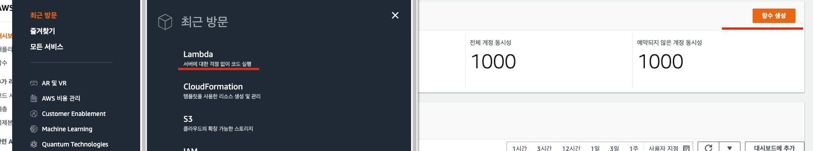
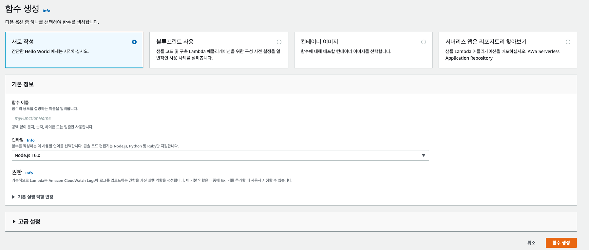
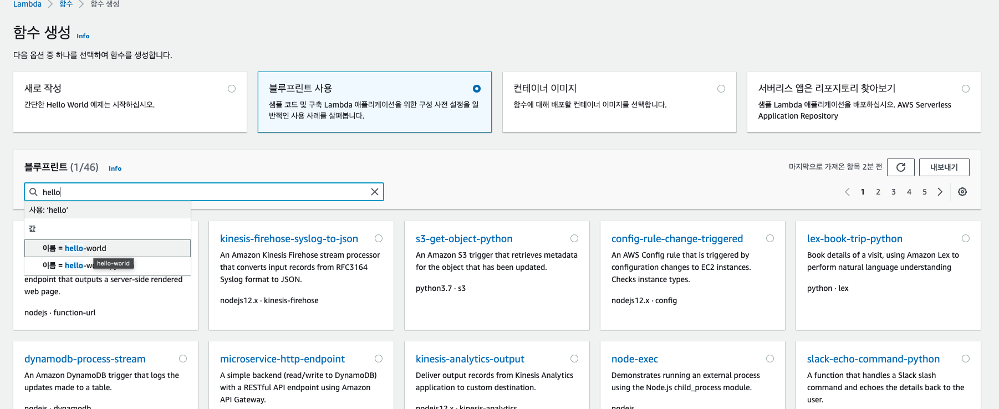
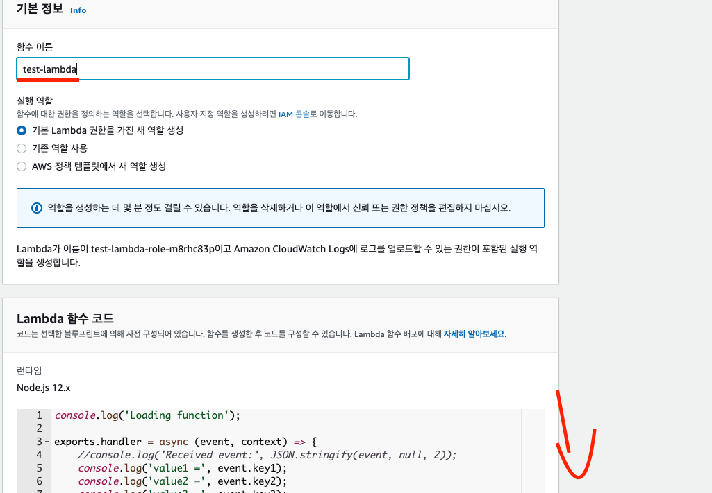
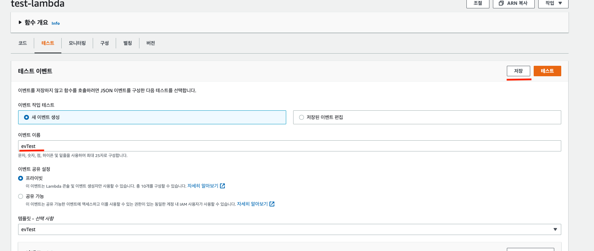
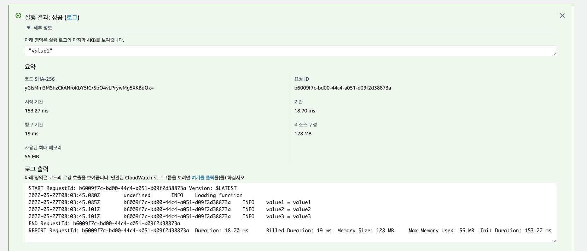
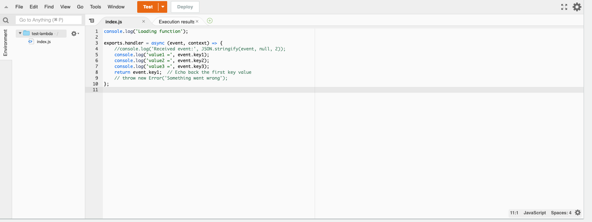

<meta charset="utf-8">
<html lang="ko">
<head>
    <link rel="stylesheet" type="text/css" href="./../style.css" />
    <title>[ AWS ] 기초적인 Lambda 사용해보기 - YEOL</title>
</head>
<body id="tt-body-page" class="">
<div id="wrap" class="wrap-right">
    <div id="container">
        <main class="main ">
            <div class="area-main">
                <div class="area-view">
                    <div class="article-header">
                        <div class="inner-article-header">
                            <div class="box-meta">
                                <h2 class="title-article">[ AWS ] 기초적인 Lambda 사용해보기 - YEOL</h2>
                                <div class="box-info">
                                    <p class="category">Cloud/aws</p>
                                    <p class="date">2022-05-27 17:37:31</p>
                                </div>
                            </div>
                        </div>
                    </div>
                    <hr>
                    <div class="article-view">
                        <div class="contents_style">
                            <h4 data-ke-size="size20"><span style="color: #333333;">환경</span></h4>
<p data-ke-size="size16">Mac m1<br />Aws Lambda<br />NodeJS</p>
<h4 data-ke-size="size20"><span style="color: #333333;">개요</span></h4>
<p data-ke-size="size16"><span style="color: #333333;">기초적인 테스트 개념이며 Aws를 실행해 샘플 코드를 활용하여 Lambda를 사용해봅니다.</span></p>
<h4 data-ke-size="size20"><span style="color: #333333;">목차</span></h4>
<ul style="list-style-type: disc;" data-ke-list-type="disc">
<li><span style="color: #333333;">Lambda 란</span></li>
<li><span style="color: #333333;">Lambda 사용법</span><span style="color: #333333;"></span></li>
</ul>
<h2 data-ke-size="size26">&nbsp;</h2>
<h2 data-ke-size="size26"><span style="color: #333333;"><b>- Lambda 란</b></span></h2>
<p data-ke-size="size16"><span style="color: #333333;">Aws에서 제공하는 <b>서버리스 컴퓨팅 플랫폼</b>입니다.&nbsp;</span></p>
<p data-ke-size="size16"><span style="color: #333333;">서버를 관리할 필요 없이 함수를 <b>프로비저닝</b> 하거나 원하는 때에 반복 실행할 수 있습니다. 유저는 서버를 관리할 부담이 없고 함수만 쉽게 사용할 수 있습니다.&nbsp;</span></p>
<p data-ke-size="size16"><span style="color: #333333;">프로비저닝: 사용자 요구에 맞게 시스템 자원을 할당, 배치, 배포해두었다가 필요할 때 즉시 사용할 수 있는 상태로 준비하는 것을 말합니다.</span></p>
<p data-ke-size="size16"><span style="color: #333333;">사용 예시<br />- 특정 주기로 코드를 실행하는 경우 (ex cron을 설정하여 1분마다 코드 실행)<br />- 트리거를 걸어 코드를 실행하고 싶은 경우(ex S3에 파일 업로드 시 트리거 동작 등)<br /></span><span style="color: #333333;"><br /></span></p>
<h2 data-ke-size="size26"><span style="color: #333333;"><b>- <b>Lambda</b>&nbsp;기초 사용법</b></span></h2>
<p data-ke-size="size16"><span style="color: #333333;">먼저 aws를 접속하고 콘솔 홈 화면을 띄워줍니다.&nbsp;</span></p>
<p data-ke-size="size16"><span style="color: #333333;">Lambda를 검색해서 클릭해주세요. 해당 화면에 여러 설명들이 나오고 오른쪽 구석에 함수 생성 버튼이 있습니다.&nbsp;</span></p>
<p><figure class="imageblock alignCenter" >
    <span data-lightbox="lightbox">
        
    </span>
    <figcaption></figcaption>
</figure></p>
<p data-ke-size="size16">&nbsp;</p>
<p data-ke-size="size16">함수 생성을 해주면 아래와 같은 버튼이 나오며 <b>블루 프린트</b>를 사용해줍니다. 설명 그대로 샘플 코드로 테스트하기 좋은 용도로 사용되며 Aws Document에서도 동일하게 진행합니다.&nbsp;</p>
<p><figure class="imageblock alignCenter" >
    <span data-lightbox="lightbox">
        
    </span>
    <figcaption></figcaption>
</figure></p>
<p data-ke-size="size16">&nbsp;</p>
<p data-ke-size="size16">hello를 입력하면 기본 세팅 샘플이 나오는데 그중에서 첫 번째는 node 환경이고 그 아래는 python 환경입니다.&nbsp;이번 글에 환경은 큰 상관이 없다는 걸 미리 말씀드리며 node 환경에서 테스트하겠습니다.</p>
<p><figure class="imageblock alignCenter" >
    <span data-lightbox="lightbox">
        
    </span>
    <figcaption></figcaption>
</figure></p>
<p data-ke-size="size16">&nbsp;</p>
<p data-ke-size="size16">함수 이름만 간단하게 만들어 줍니다. 기본 권한으로 함수 생성을 완료해주세요. 스크롤 내리면 생성 버튼이 나옵니다.</p>
<p><figure class="imageblock alignCenter" >
    <span data-lightbox="lightbox">
        
    </span>
    <figcaption></figcaption>
</figure></p>
<p data-ke-size="size16">&nbsp;</p>
<p data-ke-size="size16">만들어진 함수를 클릭해줍니다. 아래와 같은 화면이 나오는데 테스트 이벤트를 만들어줍시다.</p>
<p><figure class="imageblock alignCenter" >
    <span data-lightbox="lightbox">
        
    </span>
    <figcaption></figcaption>
</figure></p>
<p data-ke-size="size16">&nbsp;</p>
<p data-ke-size="size16">이벤트 이름을 작성한 후 별다른 설정 없이 저장을 하면 테스트 이벤트 하나가 생성된 것을 볼 수 있습니다.&nbsp;&nbsp;</p>
<p><figure class="imageblock alignCenter" >
    <span data-lightbox="lightbox">
        
    </span>
    <figcaption></figcaption>
</figure></p>
<p data-ke-size="size16">&nbsp;</p>
<p data-ke-size="size16">그대로 테스트를 진행하면 처음에 세팅했던 index.js 파일에서 실행한 로그들이 아래에 보이는 걸&nbsp; 알 수 있습니다.</p>
<p><figure class="imageblock alignCenter" >
    <span data-lightbox="lightbox">
        
    </span>
    <figcaption></figcaption>
</figure><figure class="imageblock alignCenter" >
    <span data-lightbox="lightbox">
        
    </span>
    <figcaption></figcaption>
</figure></p>
<p data-ke-size="size16">간단하게 Lmabda test를 해보았습니다. 성실한 코딩 하세요.</p>
                        </div>
                        <br/>
                        <div class="tags">
                            #AWS Lambda #lambda 사용법 #lambda 란 
                        </div>
                    </div>
                </div>
            </div>
        </main>
    </div>
</div>
</body>
</html>
